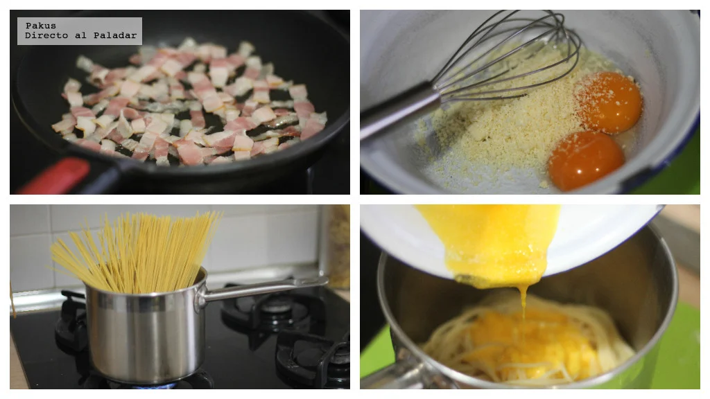
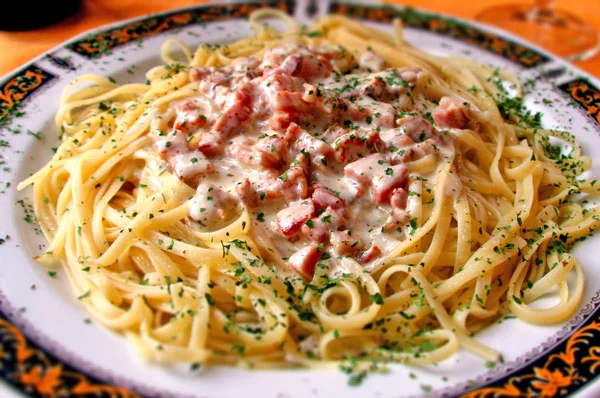

Ingredientes
Para 2 personas
- 151.2 g de spaghetti
- 1/2 cucharada de sal
- 150g de panceta
- 1 yema de huevo
- 1 huevo entero
- 50g de queso rallado
- pimienta a gusto
- 1 cucharada de perejil picado
Instrucciones
- Hierva el agua en una olla grande y sazone con sal. Cocine la pasta según las Instrucciones del paquete. Reserve 1 y 1/2 tazas del agua de la pasta.
- En una sarten cocine la panceta a fuego medio hasta que esté crujiente, aproximadamente de 7 a 10 minutos. Escurra la grasa de la panceta, reservando solo 2 cucharadas de grasa.
- En una taza mezcle las yemas de huevo, los huevos y 1 taza del queso.
- Mezcle la pasta escurrida con la panceta cocida y las 2 cucharadas de la grasa. Vierta la mezcla del huevo, junto con el agua de pasta reservada y mezcle con la pasta durante 2 minutos.
- Sirva caliente con el resto del queso, pimienta y perejil para decorar. 